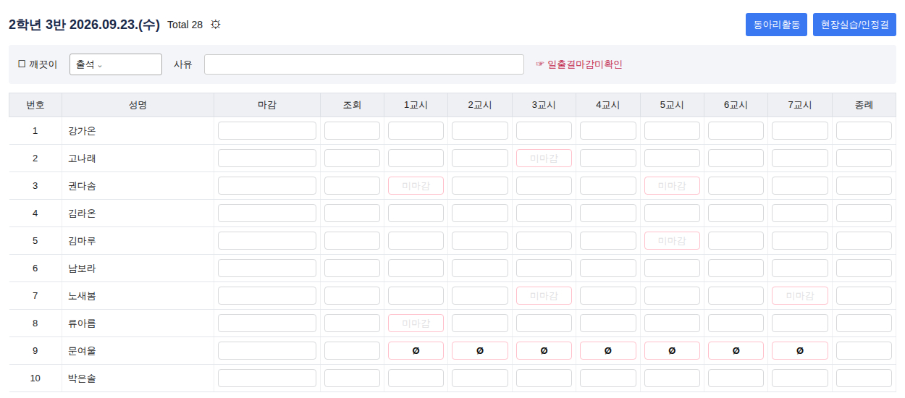

1 학생 시간표 불러오기
나이스 학생별 시간표 PDF 또는 시간표 엑셀(xlsx·xls·csv)을 넣어 주세요. 여러 파일(여러 주차)을 한꺼번에 넣어도 됩니다. 형식이 없다면 로 만들 수 있습니다.
시간표 형식 자세히 보기
나이스 학생별 시간표 PDF (가장 간편) — 나이스에서 반 학생 전체의 ‘학생별 시간표’를 PDF로 저장해 그대로 넣으면 됩니다. 한 쪽에 학생 한 명, 주차 날짜가 있으면 그 주는 날짜 그대로 찾습니다. (스캔한 이미지 PDF는 읽을 수 없습니다)
엑셀 가로형 — 한 학생이 한 줄, 칸에는 과목(교사)
| 번호 | 이름 | 월1 | 월2 | … | 수1 | … | 금7 |
|---|---|---|---|---|---|---|---|
| 1 | 강가온 | 영어Ⅱ(한서준) | 기하(문지후) | … | 영어Ⅱ(한서준) | … | 세계사(오하린) |
| 공통 | 영어Ⅱ(한서준) | … | … |
- 칸은
과목(교사),과목/교사,과목↵교사모두 인식합니다. - 이름을 공통으로 쓴 줄은 반 전체의 기본 시간표로 쓰입니다(학생 칸이 비어 있을 때).
- 칸에 과목만 있다면 과목-교사 시트(과목 | 교사)를 추가하면 교사를 채워 줍니다.
- 세로형:
번호 | 이름 | 요일 | 교시 | 과목 | 교사한 줄에 한 시간씩.
2 나이스 미마감 화면 넣기
캡처 이미지를 Ctrl+V로 붙여넣기
또는 끌어다 놓기 · 클릭해서 선택 · 여러 장 가능
캡처 제목(예: 2학년 7반)에서 자동으로 채워집니다.

- 나이스 학급 일일 출결 화면에서 날짜를 고릅니다.
- 제목 줄(2학년 3반 2026.09.23.)과 머리글 줄(번호·성명·1교시…)이 함께 보이게 캡처합니다.
- 학생이 많아 한 화면에 안 보이면 스크롤하며 여러 장 캡처해도 됩니다.
- 분홍 칸 중 ‘미마감’ 글자가 있는 칸만 정리합니다. 결석(Ø) 표시 칸은 자동으로 빠집니다.
- 캡처: 윈도우 Win+Shift+S · 맥 ⌘+Shift+4 → 여기서 Ctrl+V
3 인식 결과 확인·수정
분홍색 칸이 미마감으로 인식된 곳입니다. 칸을 눌러 켜고 끌 수 있어요. 칸 안의 글자는 시간표에서 찾은 과목입니다.
4 엑셀로 내려받기
🔒 개인정보 보호 방식
- 서버가 없습니다. 이 사이트는 정적 파일(HTML·JS)만 내려받고, 올린 시간표·캡처·결과는 모두 브라우저 메모리 안에서만 처리합니다.
- 외부 통신 차단. 보안 정책(CSP)으로 이 사이트 밖의 어떤 주소로도 데이터를 보낼 수 없게 막았습니다. 글자 인식(OCR) 엔진과 한글 인식 자료도 이 사이트 안에 함께 들어 있습니다.
- 저장하지 않습니다. 쿠키·로컬 저장소·분석 도구를 쓰지 않습니다. 탭을 닫거나 를 누르면 사라집니다.
- 만든 엑셀은 내 컴퓨터로 바로 내려받아지며, 학교 규정에 맞게 보관·파기해 주세요.